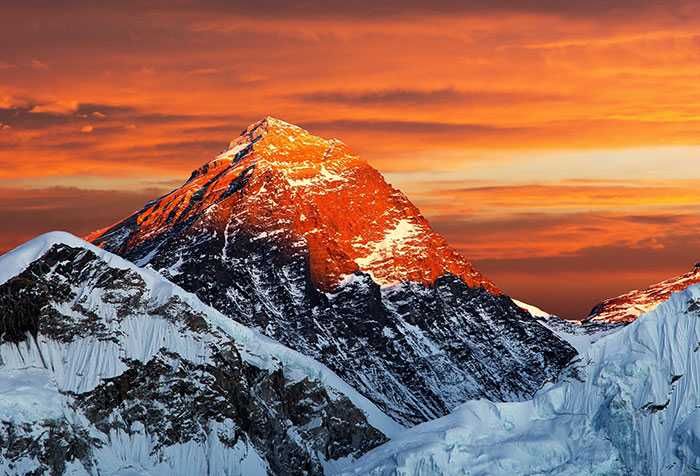
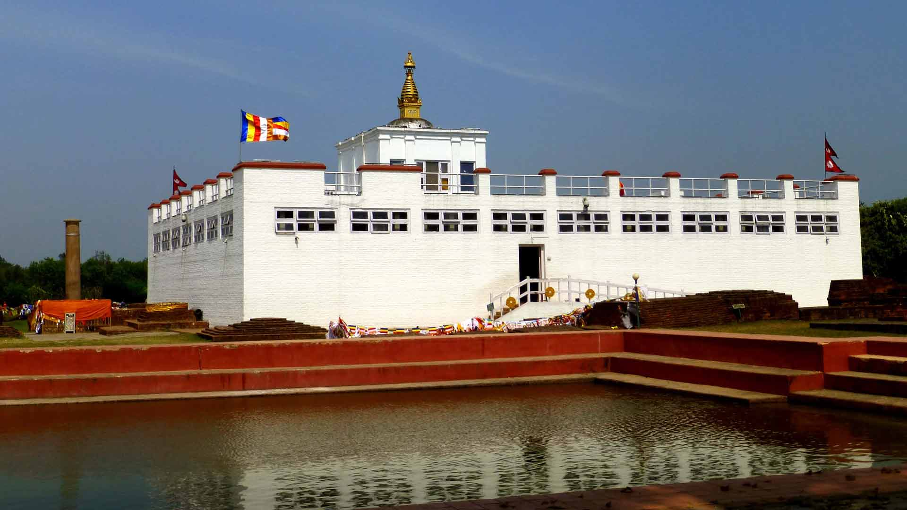

Mount Everest is Earth's highest mountain above sea level, located in the Mahalangur Himal sub-range of the Himalayas. The China–Nepal border runs across its summit point. Its elevation of 8,848.86 m was most recently established in 2020 by the Chinese and Nepali authorities. Wikipedia
Elevation: 8,849 m
First ascent: May 29, 1953
Prominence: 8,848 m
Location: Solukhumbu District, Province No. 1, Nepal; Tingri County, Xigazê, Tibet Autonomous Region, China
Mountain range: Himalayas
First ascenders: Edmund Hillary, Tenzing Norgay
Parent ranges: Mahalangur Himal, Himalayas

Lumbinī is a Buddhist pilgrimage site in the Rupandehi District of Lumbini Province in Nepal. It is the place where, according to Buddhist tradition, Queen Mahamayadevi gave birth to Siddhartha Gautama at around 563 BCE. Wikipedia
Elevation: 150 m
Province: Lumbini Pradesh

Phewa Lake, Phewa Tal or Fewa Lake is a freshwater lake in Nepal formerly called Baidam Tal located in the south of the Pokhara Valley that includes Pokhara city; parts of Sarangkot and Kaskikot. Wikipedia
Area: 4.43 km²
Surface elevation: 742 m
Length: 4 km
Width: 9 km
Mean depth: 8.6 m
Catchment area: 122.5 km²
Cities: Pokhara, Kaskikot, Dhikur Pokhari
Rara Lake is the biggest fresh water lake in the Nepalese Himalayas. It is the main feature of Rara National Park, located in Jumla and Mugu Districts of Karnali Province. In September 2007, it was declared a Ramsar site, covering 1,583 ha including the surrounding wetland. Wikipedia
Surface elevation: 2,990 m
Area: 9.8 km²
Length: 5.1 km
Width: 2.7 km
Volume: 0.98 km³
Designated as world heritage site: September 23, 2007